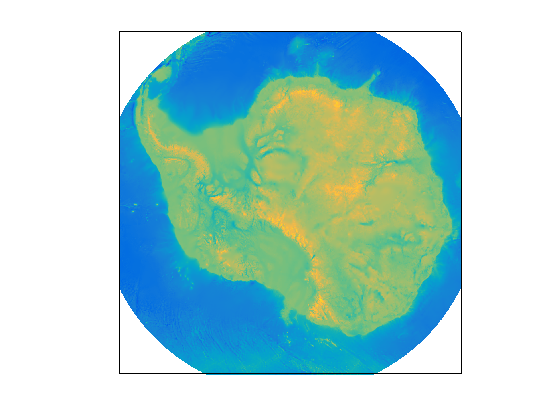

ps2ll documentation
ps2ll is part of Antarctic Mapping Tools for Matlab (Greene et al., 2017). Click here for a complete list of functions in AMT.
The ps2ll function transforms polar stereographic (x,y) coordinates to georeferenced (lat,lon) coordinates using Snyder's formulations. ps2ll and its sister function ll2ps are derived from Andy Bliss' polarstereo_fwd and polarstereo_fwd functions, adapted specifically for Antarctica. These functions do NOT require Matlab's Mapping Toolbox.
Contents
Syntax
[lat,lon] = ps2ll(x,y) [lat,lon] = ps2ll(x,y,'TrueLat',ReferenceLatitude) [lat,lon] = ps2ll(x,y,'EarthRadius',RadiusInMeters) [lat,lon] = ps2ll(x,y,'Eccentricity',EarthsMisshapenness) [lat,lon] = ps2ll(x,y,'meridian',MeridianInDegrees)
Description
[lat,lon] = ps2ll(x,y) transforms polar stereographic meters to geo coordinates coordinates referenced to 71°S. Inputs x and y can be scalar, vecotor, or matrices of equal size.
[lat,lon] = ps2ll(x,y,'TrueLat',ReferenceLatitude) secifies a reference latitude of true scale in degrees; also known as the standard parallel. Note that although Andy Bliss' polarstereo_inv function used -70 as a default, this function uses -71 as the default. NSIDC has been trying to standardize this, but take a close look at their reference latitudes for any data you put through this function--NSIDC sometimes uses 70°S, and sometimes uses 71°S. Again, the default in this function is -71, which matches many (not all) NSIDC Antarctic datasets as well as the Bedmap2 grid.
[lat,lon] = ps2ll(x,y,'EarthRadius',RadiusInMeters) specifies Earth's radius in meters. Default is 6378137.0 m, corresponding to WGS84.
[lat,lon] = ps2ll(x,y,'Eccentricity',EarthsMisshapenness) specifies Earth's eccentricity or misshappenness. Default values is 0.08181919.
[lat,lon] = ps2ll(x,y,'meridian',MeridianInDegrees) specifies the meridian in degrees along the positive Y axis of the map. Default value is 0.
Example 1: Gridded data
These functions were designed to make going back and forth between polar stereographic coordinates and geographic coodinates as smooth and streamlined as possible. If you have a gridded data set, say the Bedmap2 data set,
[x,y,bed] = bedmap2_data('bed','res','5 km','xy');
getting that bed data into georeferenced coordinates is simple:
[lat,lon] = ps2ll(x,y);
Now you can plot the Bedmap2 dataset in geocoordinates like this:
antmap pcolorm(lat,lon,bed)
Example 2: Specifying Earth radius, eccentricity, etc:
This is Snyder's example. The following should return x = -1540033.6; y = -560526.4;
lat = -75; lon = 150; [x,y] = ps2ll(lat,lon,'EarthRadius',6378388,'Eccentricity',0.0819919,'meridian',-100)
x = -89.9985 y = -126.5651
Going back the other way, use ps2ll:
[lat,lon] = ps2ll(x,y,'EarthRadius',6378388,'Eccentricity',0.0819919,'meridian',-100)
lat = -89.9986 lon = 115.4160
Citing AMT
If this function or any other part of Antarctic Mapping Tools is useful for you, please cite the paper that describes AMT.
Greene, C. A., Gwyther, D. E., & Blankenship, D. D. Antarctic Mapping Tools for Matlab. Computers & Geosciences. 104 (2017) pp.151-157. doi:10.1016/j.cageo.2016.08.003.
Author Info
This function is a slightly adapted version of Andy Bliss' polarstereo_inv, which can be found here.
This function was tweaked a bit by Chad A. Greene of the University of Texas at Austin's Institute for Geophysics (UTIG). Changes Chad made include removal of deg2rad and rad2deg to remove dependence on Mapping Toolbox, and a change to 71 degrees South as the reference latitude.